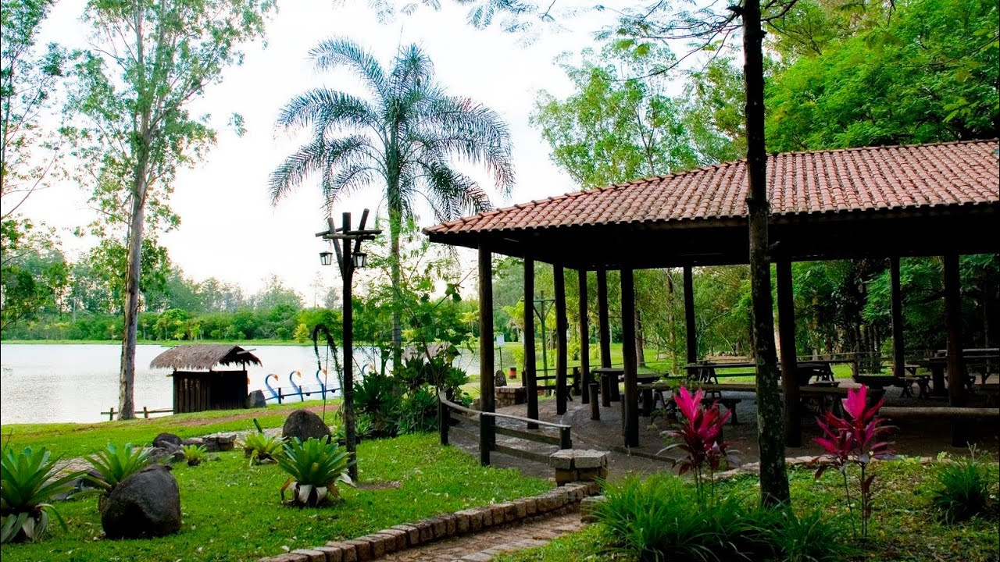
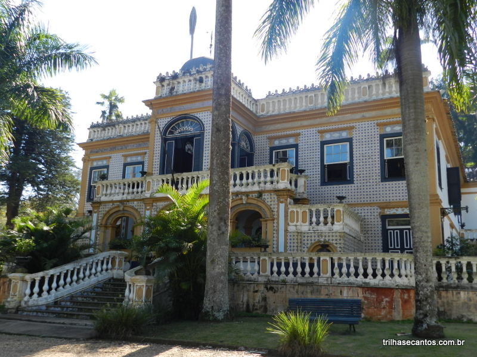
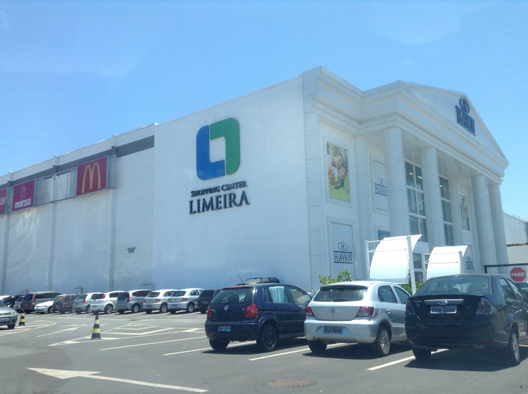

Horto Florestal de Limeira-Sp
O Horto Municipal de Limeira é um espaço amplo e diversificado, inaugurado em 1984 quando a Prefeitura assumiu o controle de uma área então abandonada, que anteriormente pertencia à Fepasa S.A. Situado a apenas nove quilômetros do centro da cidade, na via Jurandyr Paixão (antiga via Tatuibi), o Horto se estende por quase 300 alqueires, repletos de eucaliptos, formando uma vasta área verde dentro de Limeira. Sua rica paisagem natural inclui rios, lagos, bosques e trilhas que tornam o local ideal para reuniões de familiares e amigos. Dentro do Horto, a população pode usufruir de uma infraestrutura preparada para o lazer, com quiosques que oferecem churrasqueiras, mesas e pias, além de completa estrutura sanitária, incluindo banheiros e fraldários. Há também um playground para as crianças, rede de alimentação, um lago, um mirante, espaço para cavalgadas e numerosos caminhos para caminhadas e passeios de bicicleta. O espaço também é dotado de áreas específicas para educação ambiental, promovendo uma integração ainda maior com a natureza.
Fazenda Morro Azul, em Limeira, SP
Fazenda Morro Azul é um fazenda histórica brasileira, surgida em 1806, que originalmente pertencia ao município de Limeira, mas que hoje pertence ao município de Iracemápolis, desmembrado de Limeira em 30 de dezembro de 1953.[1] Foi tombada em 1974. uma linda propriedade rural que foi construída para homenagear ninguém menos que Dom Pedro I. Infelizmente, ele não chegou a conhecê-la, mas quem usufruiu dessa homenagem foi seu filho Dom Pedro II, que se hospedou ali em duas ocasiões. Por este motivo a Morro Azul ficou conhecida como a "fazenda do imperador".
Limeira Shopping
O Limeira Shopping foi inaugurado em 22 de novembro de 2012 com a missão de oferecer, para Limeira e região, as melhores opções em compras, lazer, entretenimento, alimentação e serviços. Seu diferencial está na localização privilegiada, à margem da Rodovia Anhanguera, no quilômetro 150,5 à direita (no sentido interior-capital), e de fácil acesso à cidade pelo anel viário. Com lojas consagradas no cenário nacional, como Havan, Centerplex Cinemas, Cobasi, Loja 1a99, Polo Wear, Madero, Mercearia Bresser, Kopenhagen, Mania de Churrasco, dentre outras, e prestação de serviços, como Detran/SP e o Poupatempo, o Limeira Shopping proporciona aos seus clientes conforto e praticidade, tudo em um único só local. O Limeira Shopping é o seu lugar!